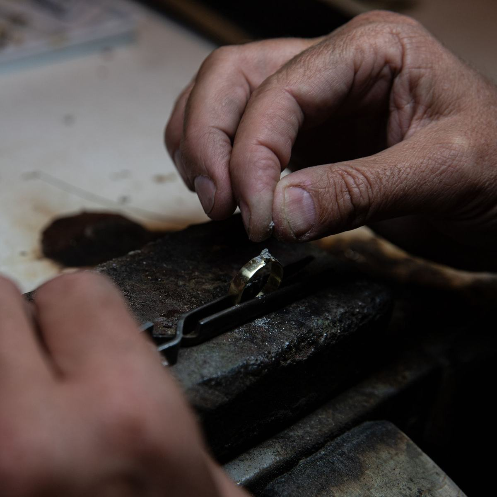
Werk van de meester goudsmid
Alles wat je hier ziet, is ontworpen en gemaakt in ons atelier in Etten-Leur.
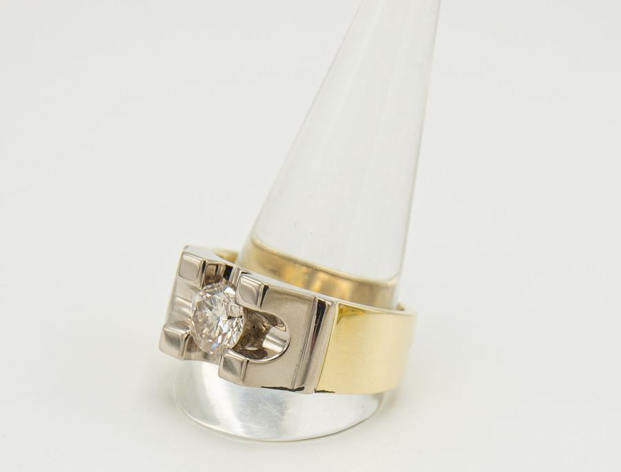
Ontwerp met de goudsmid
Uniek en met aandacht
Samen met de goudsmid iets moois bedenken. Daardoor is het altijd uniek en heel bijzonder. We starten met een richtbedrag dat er uitgegeven mag worden, en van daaruit maken we iets moois op maat.
Op de foto: een zware massieve herenring met geelgouden band en witgouden kop, met een grote briljant van de eigenaar zelf.
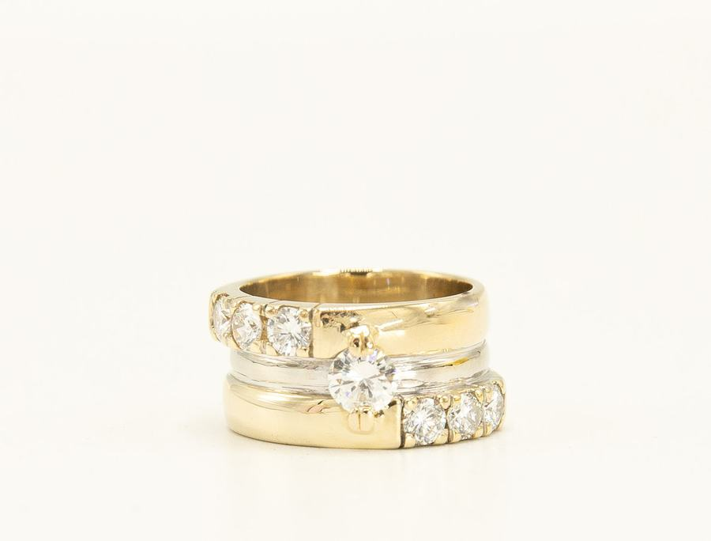
Van oud naar nieuw
Met behoud van de herinnering
Van de oude sieraden van bijvoorbeeld je ouders of grootouders maken we iets compleet nieuws, met behoud van oude elementen zoals een gravure of een mooie steen.
Zo goten we een ring uit diverse familiesieraden en hergebruikten we alle bestaande steentjes. Een uniek ontwerp met een mooie herinnering.
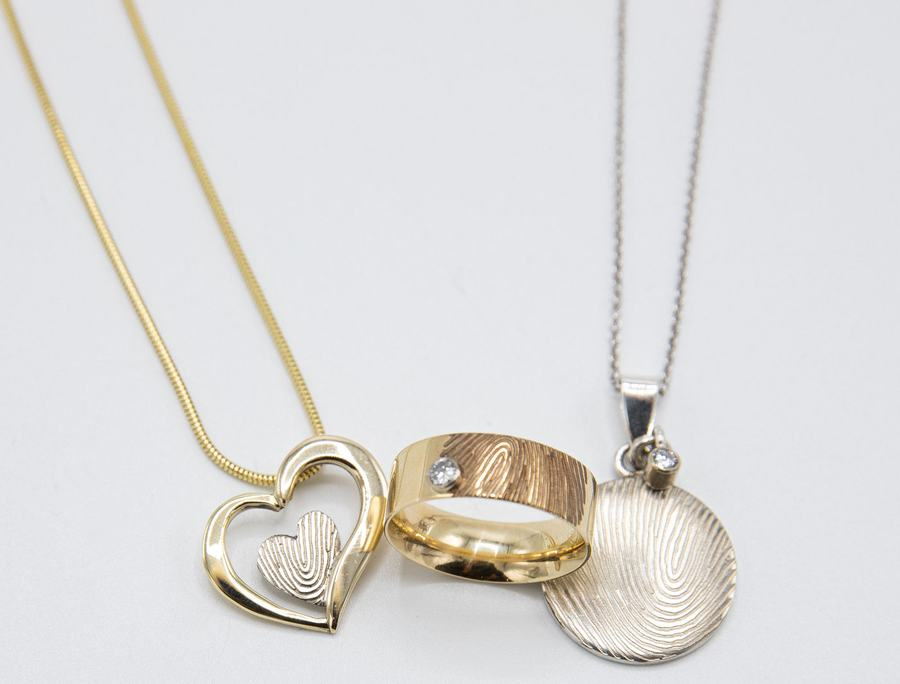
Ter nagedachtenis
Voor altijd dichtbij
Verlies blijft verdrietig en pijnlijk, en dat kunnen we niet verzachten. Wel kunnen we iets tastbaars maken als troost, met bijvoorbeeld de as of een vingerafdruk van een dierbare erin verwerkt.
- Een hanger of ring met een vingerafdruk
- As achter een briljant
- Van twee trouwringen één ontwerp of een hanger
Meer uit ons atelier
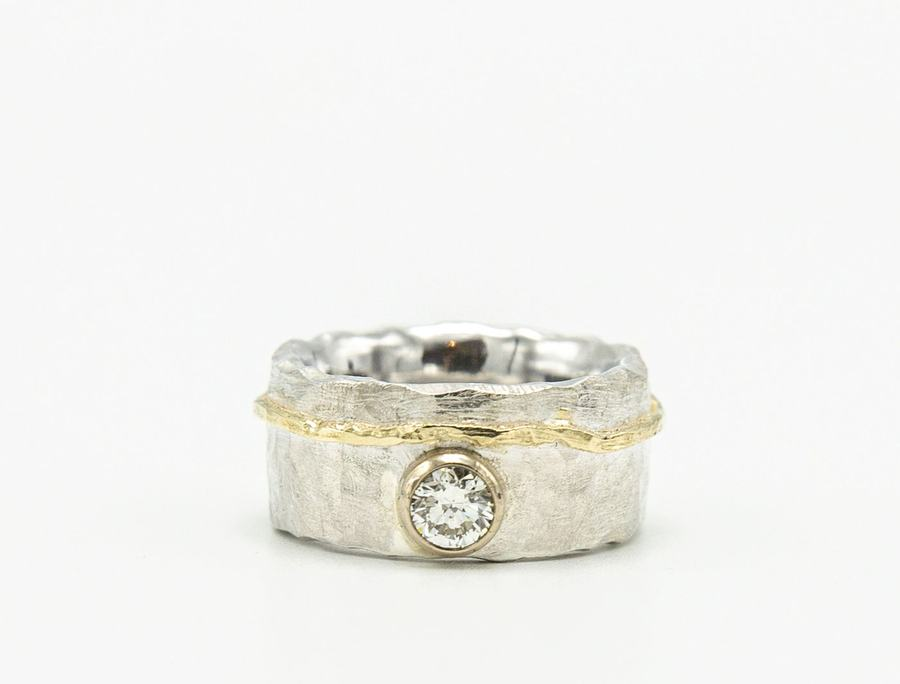
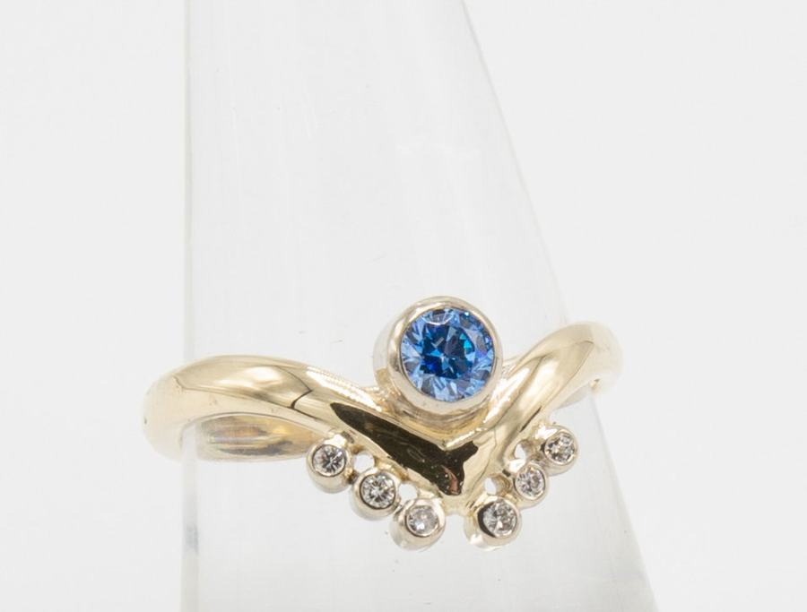
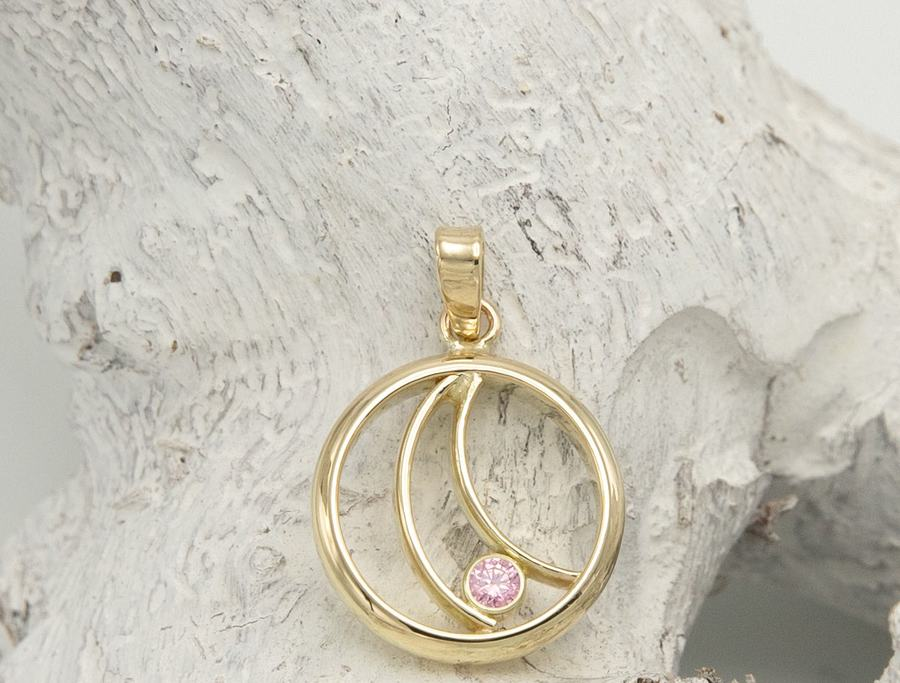
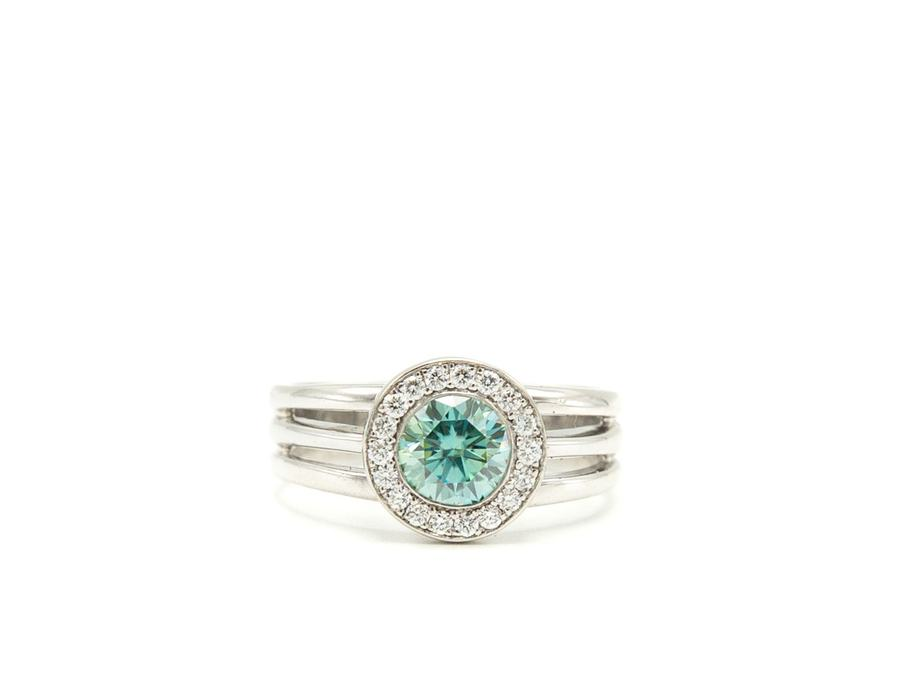
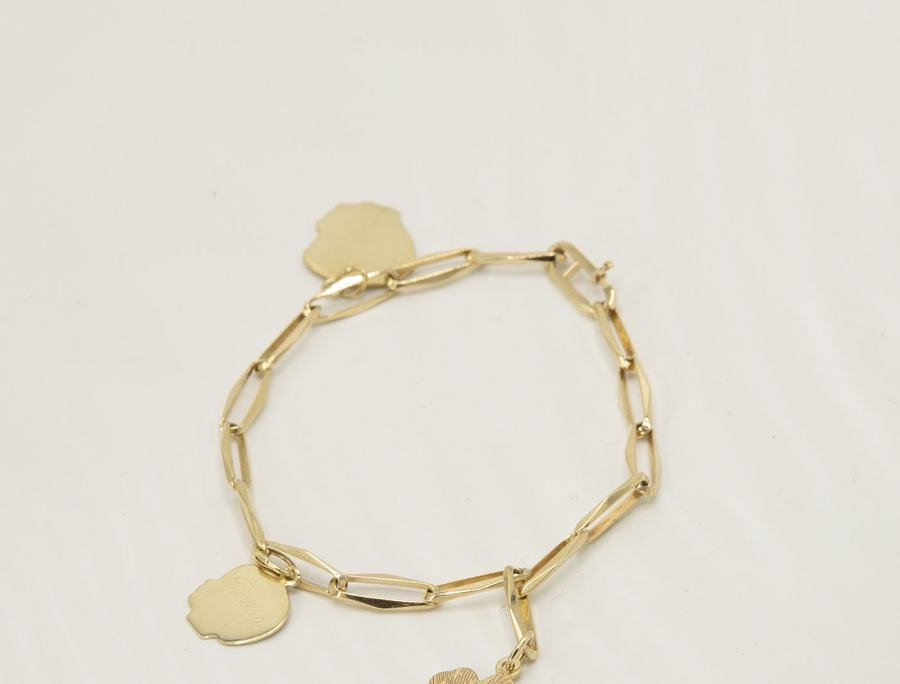
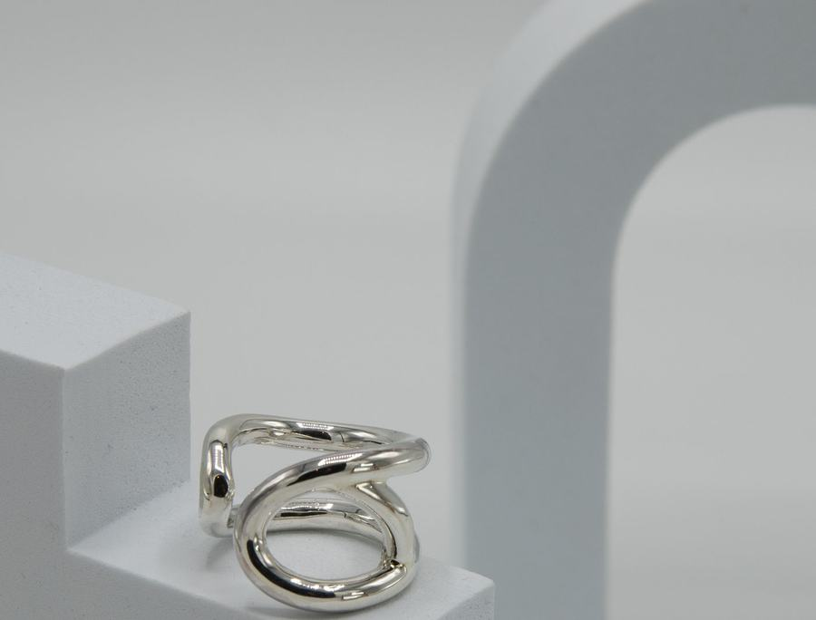
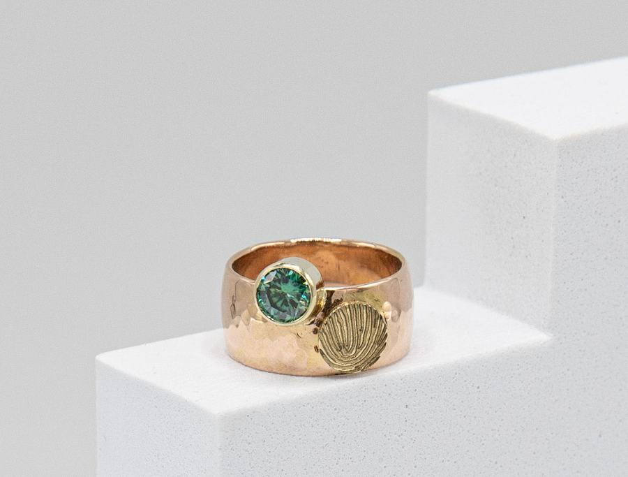
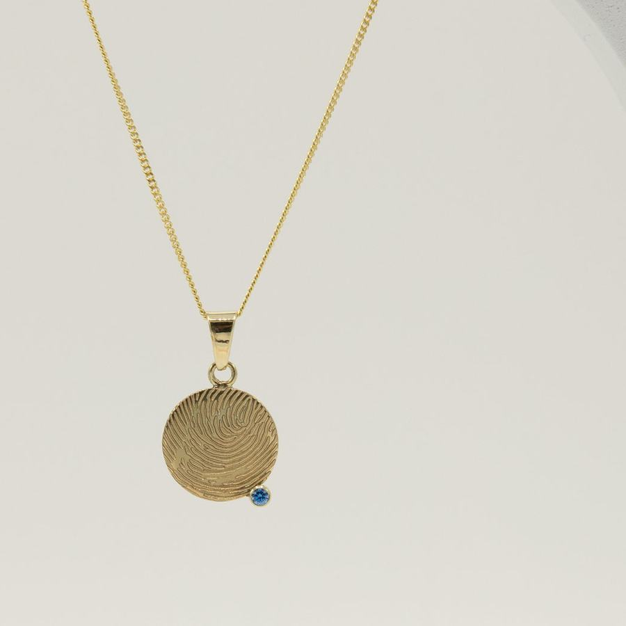
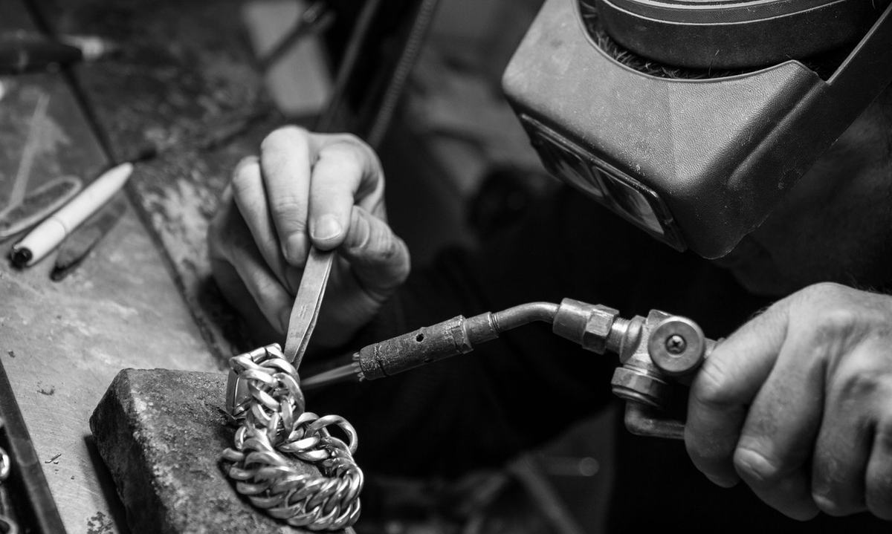
Reparaties en taxaties
Voor al je reparaties aan sieraden kun je bij ons terecht.
- Slot vervangen
- Ring vergroten of verkleinen
- Briljant zetten
- Rhodineren, solderen en polijsten
Afspraak maken
We werken op afspraak. Bel, app of stuur een bericht, dan houden we de tijd voor je vrij. Zien we je binnenkort bij ons aan tafel?
Liever even bellen of appen?
Je kunt Jurgen direct bellen of een WhatsApp sturen.